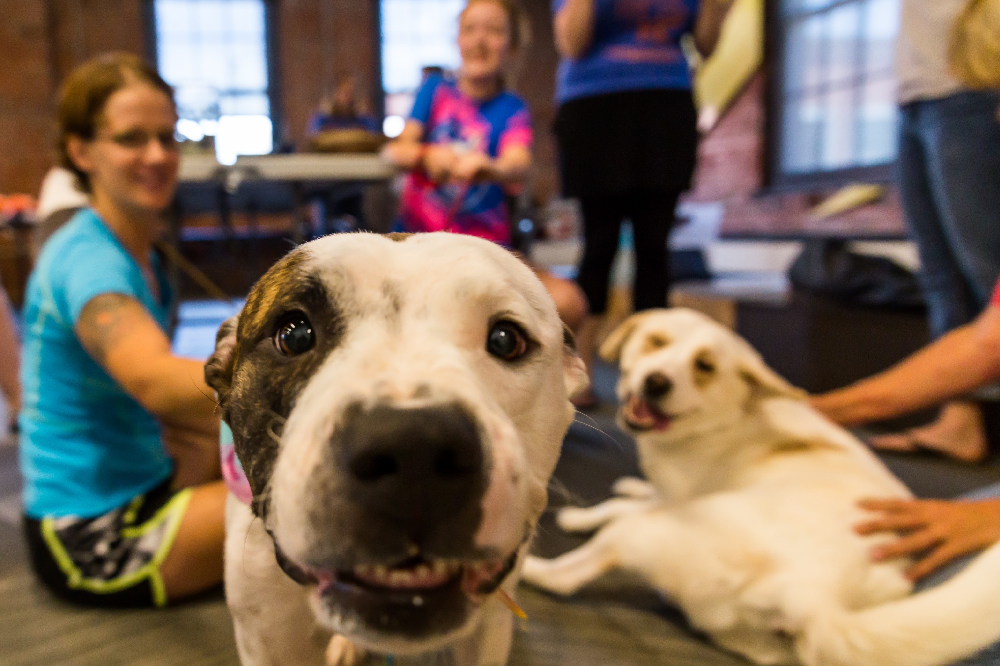
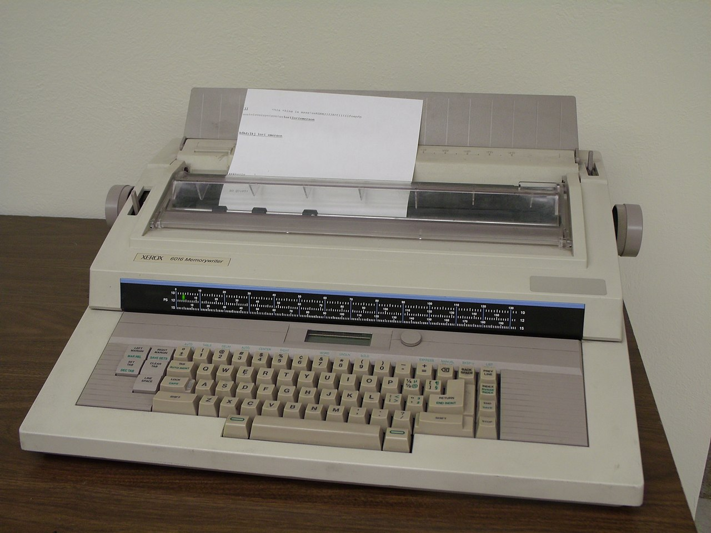
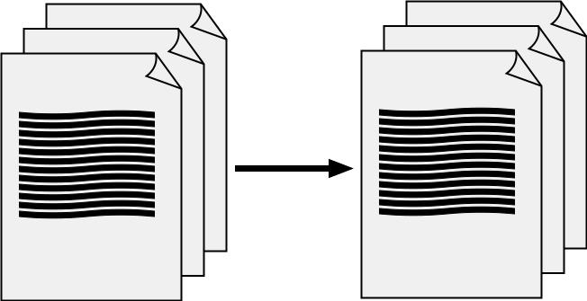
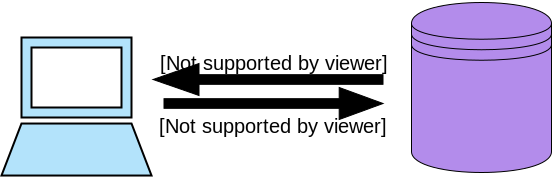
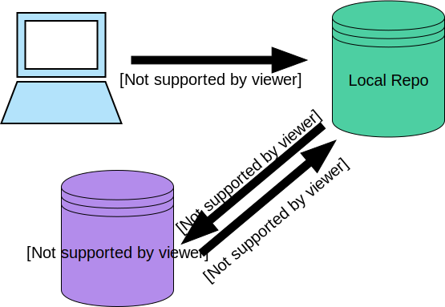

While You're Waiting
Wifi: username / password
| Install the Tools | http://bit.ly/CnCTheTools |
| This presentation | http://bit.ly/CnCAprSlides |
| The worksheet | http://bit.ly/CnCAprWork |


All slides in this presentation are licensed by http://kcwomenintech.org under a Creative Commons Attribution-ShareAlike 4.0 International License.
Intro to Version Control
Our Sponsors


Our Host this Evening
Meet the C&C #LadyDevs

Sarah Duitsman
Program Director

Kelly Winzer
Program Co-Director

Kayla Hennegin
Curriculum Director

Alisa Duncan
Technical Materials Director

Gabi Dombrowski
Mentor Director

Melissa Arroyo
Marketing Director
Join us on...


Django Girls KC
 https://djangogirls.org/kansascity/KC Women In Technology Job Board
 http://kcwomenintech.org/jobs/
http://kcwomenintech.org/jobs/
Our mentors

are super heroes!
Logistics & Libations

founded by Laura Wagner
Tonight's Agenda: Version Control
- What is Version Control & why are we using Git?
- Creating a repo & adding new files
- Editing a file & pushing local changes
- Collaborating with others
- Real life usage
What is Version Control?

A utility that tracks changes in files
- Reference past changes
- Restore previous versions
Why use Version Control?
Changes to source code are recorded
If a mistake is made, you can rollback changes
- Version History in Google Docs
- Time Machine on MacOS
- Undo in any text editor/processor
History of Version Control

Types of Version Control

Credit: Atlassian Git Tutorial
Terms of Version Control
Cloning

Terms of Version Control
Pulling/Pushing

Terms of Version Control
Commiting
Git
Concurrently work on code
Work without a network connection
Fast
Branches
Staging area*
Stashing*
Branches

Credit: Atlassian Git Tutorial

What we'll do:
Clone a repo from Github using GitKraken & see the tree visualization of commits and branches from collaborators.
Do the Worksheet:
Inspect a Repo
Wifi: username / password
| This presentation | http://bit.ly/CnCAprSlides |
| The worksheet | http://bit.ly/CnCAprWork |
| Install the Tools | http://bit.ly/CnCTheTools |
All slides in this presentation are licensed by http://kcwomenintech.org under a Creative Commons Attribution-ShareAlike 4.0 International License.
Creating a Repo & Adding New Files
git init
Cloning a Repository
git clone [url]
Git Term: origin
When the clone is pulled down to your machine, it keeps a reference to the parent, which the default term in git is origin
Essential Git Commands
git pull
Fetches and merges: Updates references & merges those updates into your local repo
git fetch
Updates references in your local repo, but does not change any files
Making Changes Locally
git status
Shows information about status, including staged and unstaged changes
git add [filepath]
git add [dir]
git add .
Add a file or directory (untracked or modified) to staging
Making Changes Locally
Git Term: staging
Tracks all your saved changes
Ignoring Local Changes
.gitignore

Making Changes Locally
git reset
Resets (undoes) a `git add`
git commit -m "[message]"
Stores your current contents of the index in a new commit

What we'll do:
Create a brand new repo and commit a change.
Do the Worksheet:
Create A Repo
Wifi: username / password
| This presentation | http://bit.ly/CnCAprSlides |
| The worksheet | http://bit.ly/CnCAprWork |
| Install the Tools | http://bit.ly/CnCTheTools |
All slides in this presentation are licensed by http://kcwomenintech.org under a Creative Commons Attribution-ShareAlike 4.0 International License.
Editing Files & Pushing Changes
git diff
git diff [filepath]
git difftool
git diff --staged
Pushing Changes to Remote
Git Term: remote
Where your code is stored
The path of where the code came from [origin]
The path where the code is going [upstream]
Merging Branches
git merge
Take the code that has diverged from origin and apply it (merge) it back into the parent branch
git merge [branch name]
Take the code from [branch name] that has diverged from origin and apply it (merge) it back into the parent branch
Merge Conflict

Rebase and History
git rebase -i HEAD~4
Apply the last 4 commits, "squashed" as 1 commit
git log
Shows commit history
Pushing Changes
git push
Updates remote using local and sends necessary objects

What we'll do:
Edit a file and push changes.
Do the Worksheet:
Editing Files
Wifi: username / password
| This presentation | http://bit.ly/CnCAprSlides |
| The worksheet | http://bit.ly/CnCAprWork |
| Install the Tools | http://bit.ly/CnCTheTools |
All slides in this presentation are licensed by http://kcwomenintech.org under a Creative Commons Attribution-ShareAlike 4.0 International License.
Collaborating with Others
Branches
A branch is a pointer to a commit
git checkout -b [new-branch-name]
git checkout [existing-branch-name]
Pull Requests
Allows teammates to review your code changes & easily make comments/suggestions
Allows reviewers to approve, comment, or request changes to the overall PR
Pull Request Steps
- Open pull request
- Add reviewers (optional)
- Comments, suggestions, approval (optional)
- Merge pull request
- Delete associated branch (optional)
Fork & Clone
For when you want to work on a repo without affecting the original repo
- Fork a repo online at Github.com
git clone [fork_url]
What we'll do:
Create a branch, complete a merge, open a pull request, and fork a repo.
Do the Worksheet:
Collaborating With Others
Wifi: username / password
| This presentation | http://bit.ly/CnCAprSlides |
| The worksheet | http://bit.ly/CnCAprWork |
| Install the Tools | http://bit.ly/CnCTheTools |
All slides in this presentation are licensed by http://kcwomenintech.org under a Creative Commons Attribution-ShareAlike 4.0 International License.
Real Life Usage
Real Life Usage
Different teams have different strategies
Tags (like a bookmark)
git tag [tagname] -a
git push origin --tags
git tag
Stash It
git stash
Keeps local changes (without staging)
git stash list
List all stashed changes
git stash pop
Remove top stash and apply it
git stash apply
Like pop, but doesn't remove it from the stash list
Merge
 Credit: Atlassian Git Tutorial
Credit: Atlassian Git Tutorial
Rebase
 Credit: Atlassian Git Tutorial
Credit: Atlassian Git Tutorial
When Not to Rebase
 Credit: Atlassian Git Tutorial
Credit: Atlassian Git Tutorial
Oops!
git reset HEAD~
Last commit back to staging
git commit --amend
Oops!
git reset HEAD --hard
Reset staging and the working directory to the most recent commit
git revert [commit ID]
Adds a new commit that undoes the commit you specify
Questions?

What's Next
- Find a buddy
- Take the quiz
- Join Slack
- Finish tonight's worksheet
- Find an online tutorial on Version Control
- Register for next month's event
Keep up with us
codingandcocktails.kcwomenintech.org


#LadyDevs #KCWiT #CodingAndCocktailsKC